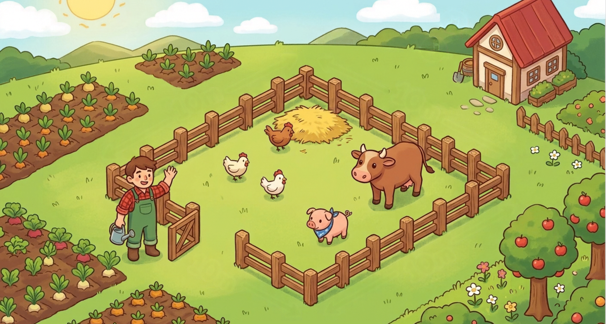

Por que estudar otimização?
No nosso dia a dia, é comum precisarmos fazer escolhas quando os recursos são limitados. Podemos ter uma quantidade fixa de material para construir alguma coisa, um tempo limitado para realizar uma tarefa ou um orçamento que não pode ser ultrapassado. Nesses casos, muitas vezes existem várias possibilidades, mas queremos encontrar aquela que proporciona o melhor resultado.
Por exemplo, uma fábrica pode precisar definir a quantidade ideal de produtos a fabricar; uma empresa de transporte pode buscar uma forma de reduzir gastos; um arquiteto pode querer aproveitar melhor o espaço disponível em um projeto; ou ainda podemos precisar decidir como organizar um determinado recurso para obter o maior aproveitamento possível.
Essas situações envolvem problemas de otimização. Nelas, a Matemática nos ajuda a analisar as diferentes possibilidades e a identificar quando uma determinada escolha representa um resultado máximo ou mínimo.
Nesta aula, vamos explorar esse tipo de problema e investigar como podemos encontrar essas situações de forma matemática.

O problema
Um fazendeiro possui \(40\) metros de cerca para construir um cercado retangular.
Quais devem ser as dimensões do cercado para que sua área seja máxima?